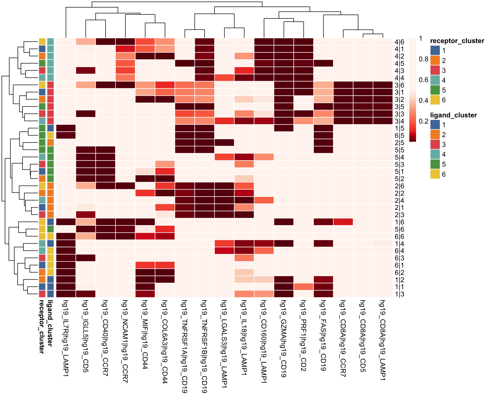
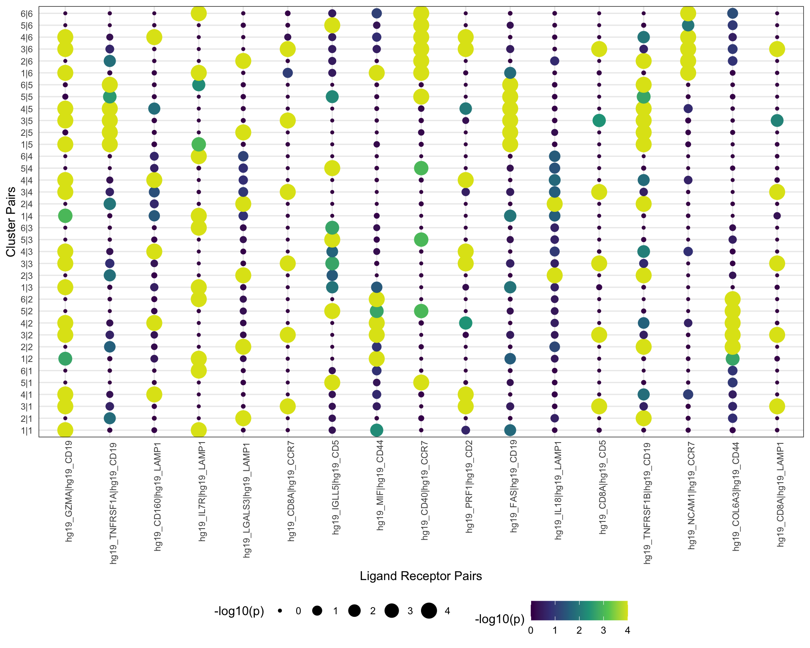
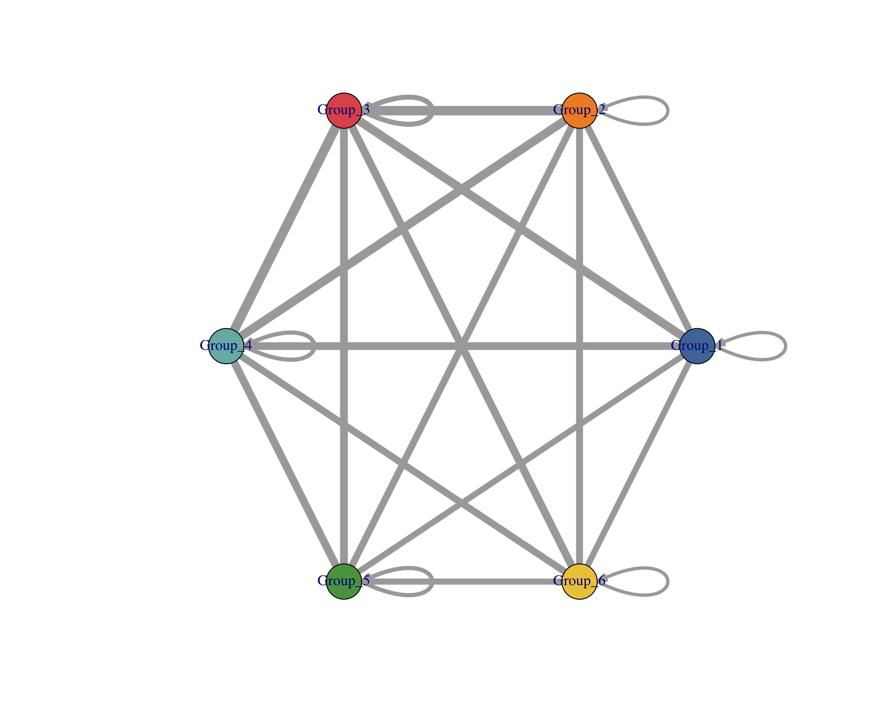
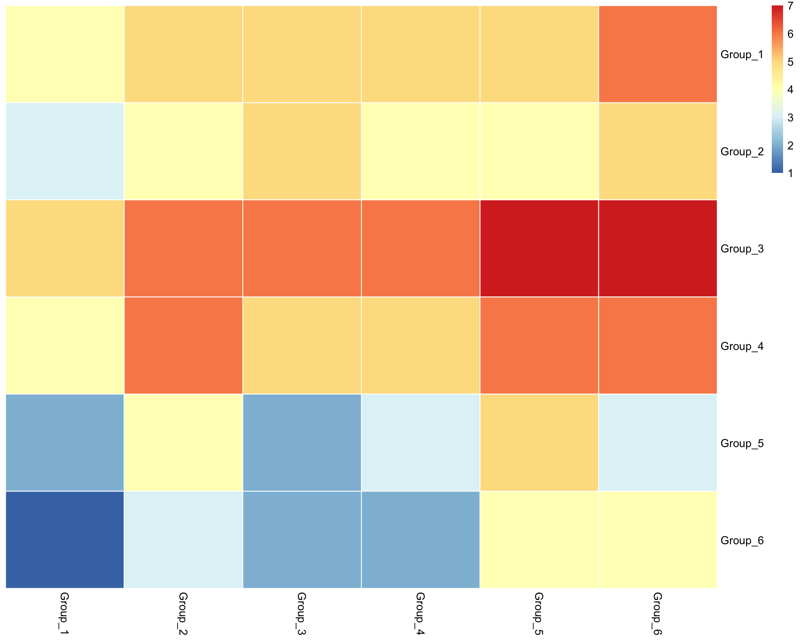
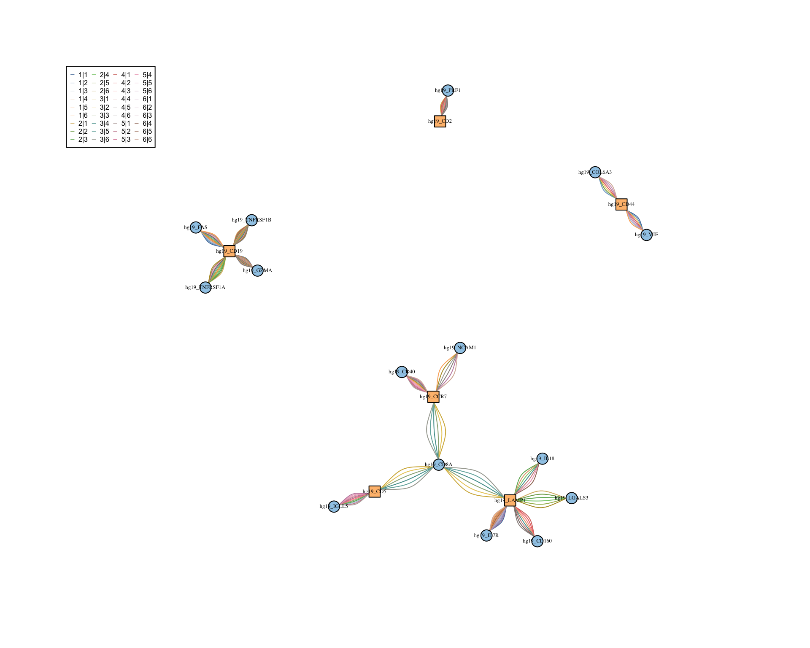

Last updated: 2020-11-24
Checks: 7 0
Knit directory: interaction-tools/
This reproducible R Markdown analysis was created with workflowr (version 1.6.2). The Checks tab describes the reproducibility checks that were applied when the results were created. The Past versions tab lists the development history.
Great! Since the R Markdown file has been committed to the Git repository, you know the exact version of the code that produced these results.
Great job! The global environment was empty. Objects defined in the global environment can affect the analysis in your R Markdown file in unknown ways. For reproduciblity it’s best to always run the code in an empty environment.
The command set.seed(20191213) was run prior to running the code in the R Markdown file. Setting a seed ensures that any results that rely on randomness, e.g. subsampling or permutations, are reproducible.
Great job! Recording the operating system, R version, and package versions is critical for reproducibility.
Nice! There were no cached chunks for this analysis, so you can be confident that you successfully produced the results during this run.
Great job! Using relative paths to the files within your workflowr project makes it easier to run your code on other machines.
Great! You are using Git for version control. Tracking code development and connecting the code version to the results is critical for reproducibility.
The results in this page were generated with repository version 0333fe3. See the Past versions tab to see a history of the changes made to the R Markdown and HTML files.
Note that you need to be careful to ensure that all relevant files for the analysis have been committed to Git prior to generating the results (you can use wflow_publish or wflow_git_commit). workflowr only checks the R Markdown file, but you know if there are other scripts or data files that it depends on. Below is the status of the Git repository when the results were generated:
Ignored files:
Ignored: .Rhistory
Ignored: .Rproj.user/
Ignored: .drake/
Ignored: data/COMUNET/
Ignored: data/CellChat/
Ignored: data/ICELLNET/
Ignored: data/NicheNet/
Ignored: data/cellphonedb/
Ignored: data/celltalker/
Ignored: output/14-CellChat.Rmd/
Ignored: output/15-talklr.Rmd/
Ignored: output/16-CiteFuse.Rmd/
Ignored: output/17-scTHI.Rmd/
Ignored: output/18-celltalker.Rmd/
Ignored: output/index.Rmd/
Ignored: renv/library/
Ignored: renv/python/
Ignored: renv/staging/
Unstaged changes:
Modified: _drake.R
Note that any generated files, e.g. HTML, png, CSS, etc., are not included in this status report because it is ok for generated content to have uncommitted changes.
These are the previous versions of the repository in which changes were made to the R Markdown (analysis/16-CiteFuse.Rmd) and HTML (docs/16-CiteFuse.html) files. If you’ve configured a remote Git repository (see ?wflow_git_remote), click on the hyperlinks in the table below to view the files as they were in that past version.
| File | Version | Author | Date | Message |
|---|---|---|---|---|
| html | d85e512 | Luke Zappia | 2020-11-09 | Build CiteFuse |
| Rmd | 70de07f | Luke Zappia | 2020-11-09 | Add CiteFuse tutorial |
| Rmd | bb91bf5 | Luke Zappia | 2020-11-09 | Create CiteFuse document |
# Setup document
source(here::here("code", "setup.R"))
# Function dependencies
invisible(drake::readd(download_link))In this document we are going to run through the example analysis for the CiteFuse package and have a look at the output it produces. This package is primarily for analysing CITE-seq data but it’s cell-cell interaction function also works with regular scRNA-seq. More information about CiteFuse can be found at https://github.com/SydneyBioX/CiteFuse/.
library("CiteFuse")Chunk time: 5.71 secs
The main input for CiteFuse is provided as a list of matrices:
data("CITEseq_example", package = "CiteFuse")Chunk time: 0.26 secs
The list contains 3 items: RNA, ADT and HTO
For this example we will just use the RNA matrix.
pander(as.matrix(CITEseq_example$RNA[1:5, 1:5]))| AAGCCGCGTTGTCTTT | GATCGCGGTTATCGGT | GGCTGGTAGAGGTTAT | |
|---|---|---|---|
| hg19_AL627309.1 | 0 | 0 | 0 |
| hg19_AL669831.5 | 0 | 0 | 0 |
| hg19_FAM87B | 0 | 0 | 0 |
| hg19_LINC00115 | 0 | 0 | 0 |
| hg19_FAM41C | 0 | 0 | 0 |
| CTACACCCAATAGCAA | ACAGCTACAGATCGGA | |
|---|---|---|
| hg19_AL627309.1 | 0 | 0 |
| hg19_AL669831.5 | 0 | 0 |
| hg19_FAM87B | 0 | 0 |
| hg19_LINC00115 | 0 | 0 |
| hg19_FAM41C | 0 | 0 |
Chunk time: 0.2 secs
The full matrix has 19521 rows (genes) and 500 columns (cells).
The other thing we need is a set of ligand-receptor pairs. For this example we use a subset provided with the package as a matrix. Because we are only use the RNA data we need to add a prefix to the receptor column.
data("lr_pair_subset", package = "CiteFuse")
# Modify the pair names because we are using just RNA
modified_lr_pairs <- lr_pair_subset
modified_lr_pairs[, 2] <- paste0("hg19_", modified_lr_pairs[, 2])
pander(as.matrix(modified_lr_pairs[1:5, 1:2]))| hg19_IL17RA | hg19_CD45 |
| hg19_FAS | hg19_CD11b |
| hg19_GZMK | hg19_CD62L |
| hg19_CD40LG | hg19_CD11b |
| hg19_FLT3LG | hg19_CD62L |
Chunk time: 0.02 secs
The matrix has 50 rows (pairs) and 2 columns.
The first step is to create a SingleCellExperiment object to hold the expression data.
sce <- preprocessing(CITEseq_example$RNA)
sceclass: SingleCellExperiment
dim: 19521 500
metadata(0):
assays(1): counts
rownames(19521): hg19_AL627309.1 hg19_AL669831.5 ... hg19_MT-ND6
hg19_MT-CYB
rowData names(0):
colnames(500): AAGCCGCGTTGTCTTT GATCGCGGTTATCGGT ... TTGGCAACACTAGTAC
GCTGCGAGTTGTGGCC
colData names(0):
reducedDimNames(0):
altExpNames(0):Chunk time: 0.29 secs
The dataset has 19521 genes and 500 cells.
Next we normalise the expression values. This is done in two steps where the scater logNormCounts() is used to correct for sequencing depth and log-transform before a min-max transformation is applied.
sce <- scater::logNormCounts(sce)
sce <- normaliseExprs(
sce,
altExp_name = "none",
exprs_value = "logcounts",
transform = "minMax"
)
sceclass: SingleCellExperiment
dim: 19521 500
metadata(0):
assays(3): counts logcounts minMax
rownames(19521): hg19_AL627309.1 hg19_AL669831.5 ... hg19_MT-ND6
hg19_MT-CYB
rowData names(0):
colnames(500): AAGCCGCGTTGTCTTT GATCGCGGTTATCGGT ... TTGGCAACACTAGTAC
GCTGCGAGTTGTGGCC
colData names(1): sizeFactor
reducedDimNames(0):
altExpNames(0):Chunk time: 3.54 secs
This example dataset doesn’t come with cluster labels. In the original dataset they perform clustering on the combined CITE-seq data, but here we will quickly cluster just the RNA.
**NOTE: This may not give ideal clusters and could be the cause of any weirdness in the following sections.
sce <- scater::runPCA(sce)
graph <- scran::buildSNNGraph(sce, k=10, use.dimred = "PCA")
clusters <- igraph::cluster_louvain(graph)$membershipChunk time: 0.57 secs
This gives us 6 clusters.
Once the data is normalised and clustered we can perform the test for ligand-receptor activity.
# Modify the pair names because we are using just RNA
modified_lr_pairs <- lr_pair_subset
modified_lr_pairs[, 2] <- paste0("hg19_", modified_lr_pairs[, 2])
sce <- ligandReceptorTest(
sce,
ligandReceptor_list = modified_lr_pairs,
cluster = factor(clusters),
RNA_exprs_value = "minMax",
use_alt_exp = FALSE,
num_permute = 1000
)100 ......200 ......300 ......400 ......500 ......600 ......700 ......800 ......900 ......1000 ......Chunk time: 39.59 secs
Let’s have a look at the results.
Heatmap of p-values for ligand-receptor pairs.
visLigandReceptor(
sce,
type = "pval_heatmap",
receptor_type = "RNA"
)
| Version | Author | Date |
|---|---|---|
| d85e512 | Luke Zappia | 2020-11-09 |
Chunk time: 0.4 secs
Dot plot of p-values for ligand-receptor pairs.
visLigandReceptor(
sce,
type = "pval_dotplot",
receptor_type = "RNA"
)
| Version | Author | Date |
|---|---|---|
| d85e512 | Luke Zappia | 2020-11-09 |
Chunk time: 0.73 secs
Network of interactions between clusters.
visLigandReceptor(
sce,
type = "group_network",
receptor_type = "RNA"
)
| Version | Author | Date |
|---|---|---|
| d85e512 | Luke Zappia | 2020-11-09 |
Chunk time: 0.46 secs
Heatmap of interactions between clusters.
visLigandReceptor(
sce,
type = "group_heatmap",
receptor_type = "RNA"
)
| Version | Author | Date |
|---|---|---|
| d85e512 | Luke Zappia | 2020-11-09 |
Chunk time: 0.13 secs
Network of ligands and receptors. Here the nodes are ligands and receptors and the edges are interactions between clusters.
visLigandReceptor(
sce,
type = "lr_network",
receptor_type = "RNA"
)
| Version | Author | Date |
|---|---|---|
| d85e512 | Luke Zappia | 2020-11-09 |
Chunk time: 0.28 secs
This table describes parameters used and set in this document.
params <- list(
)
params <- toJSON(params, pretty = TRUE)
kable(fromJSON(params))Chunk time: 0.01 secs
This table describes the output files produced by this document. Right click and Save Link As… to download the results.
kable(data.frame(
File = c(
download_link("parameters.json", OUT_DIR)
),
Description = c(
"Parameters set and used in this analysis"
)
))| File | Description |
|---|---|
| parameters.json | Parameters set and used in this analysis |
Chunk time: 0.02 secs
sessioninfo::session_info()─ Session info ───────────────────────────────────────────────────────────────
setting value
version R version 4.0.0 (2020-04-24)
os macOS Catalina 10.15.7
system x86_64, darwin17.0
ui X11
language (EN)
collate en_US.UTF-8
ctype en_US.UTF-8
tz Europe/Berlin
date 2020-11-24
─ Packages ───────────────────────────────────────────────────────────────────
! package * version date lib source
P alluvial 0.1-2 2016-09-09 [?] CRAN (R 4.0.2)
P assertthat 0.2.1 2019-03-21 [?] CRAN (R 4.0.0)
P backports 1.1.6 2020-04-05 [?] CRAN (R 4.0.0)
P base64enc 0.1-3 2015-07-28 [?] CRAN (R 4.0.0)
P base64url 1.4 2018-05-14 [?] standard (@1.4)
P beeswarm 0.2.3 2016-04-25 [?] CRAN (R 4.0.2)
Biobase 2.48.0 2020-04-27 [1] Bioconductor
BiocGenerics 0.34.0 2020-04-27 [1] Bioconductor
P BiocNeighbors 1.6.0 2020-04-27 [?] Bioconductor
P BiocParallel 1.22.0 2020-04-27 [?] Bioconductor
P BiocSingular 1.4.0 2020-04-27 [?] Bioconductor
bitops 1.0-6 2013-08-17 [1] CRAN (R 4.0.0)
P broom 0.5.6 2020-04-20 [?] CRAN (R 4.0.0)
P cellranger 1.1.0 2016-07-27 [?] standard (@1.1.0)
P CiteFuse * 1.0.0 2020-04-27 [?] Bioconductor
P cli 2.0.2 2020-02-28 [?] CRAN (R 4.0.0)
P colorspace 1.4-1 2019-03-18 [?] standard (@1.4-1)
P conflicted * 1.0.4 2019-06-21 [?] standard (@1.0.4)
P cowplot 1.0.0 2019-07-11 [?] CRAN (R 4.0.0)
P crayon 1.3.4 2017-09-16 [?] CRAN (R 4.0.0)
P DBI 1.1.0 2019-12-15 [?] CRAN (R 4.0.0)
P dbplyr 1.4.3 2020-04-19 [?] CRAN (R 4.0.0)
P dbscan 1.1-5 2019-10-23 [?] CRAN (R 4.0.2)
P DelayedArray 0.14.1 2020-07-14 [?] Bioconductor
P DelayedMatrixStats 1.10.1 2020-07-03 [?] Bioconductor
P digest 0.6.25 2020-02-23 [?] CRAN (R 4.0.0)
P dplyr * 0.8.5 2020-03-07 [?] CRAN (R 4.0.0)
dqrng 0.2.1 2019-05-17 [1] CRAN (R 4.0.0)
P drake 7.12.0 2020-03-25 [?] CRAN (R 4.0.0)
P edgeR 3.30.3 2020-06-02 [?] Bioconductor
P ellipsis 0.3.0 2019-09-20 [?] CRAN (R 4.0.0)
P evaluate 0.14 2019-05-28 [?] standard (@0.14)
P ExPosition 2.8.23 2019-01-07 [?] CRAN (R 4.0.2)
P fansi 0.4.1 2020-01-08 [?] CRAN (R 4.0.0)
P farver 2.0.3 2020-01-16 [?] CRAN (R 4.0.0)
P filelock 1.0.2 2018-10-05 [?] CRAN (R 4.0.0)
P forcats * 0.5.0 2020-03-01 [?] CRAN (R 4.0.0)
P fs * 1.4.1 2020-04-04 [?] CRAN (R 4.0.0)
P generics 0.0.2 2018-11-29 [?] standard (@0.0.2)
P GenomeInfoDb 1.24.2 2020-06-15 [?] Bioconductor
P GenomeInfoDbData 1.2.3 2020-11-09 [?] Bioconductor
P GenomicRanges 1.40.0 2020-04-27 [?] Bioconductor
P ggbeeswarm 0.6.0 2017-08-07 [?] CRAN (R 4.0.2)
P ggforce 0.3.2 2020-06-23 [?] CRAN (R 4.0.2)
P ggplot2 * 3.3.0 2020-03-05 [?] CRAN (R 4.0.0)
P ggraph 2.0.3 2020-05-20 [?] CRAN (R 4.0.2)
ggrepel 0.8.2 2020-03-08 [1] CRAN (R 4.0.0)
ggridges 0.5.2 2020-01-12 [1] CRAN (R 4.0.0)
P git2r 0.27.1 2020-05-03 [?] CRAN (R 4.0.0)
P glue * 1.4.0 2020-04-03 [?] CRAN (R 4.0.0)
P graphlayouts 0.7.1 2020-10-26 [?] CRAN (R 4.0.2)
gridExtra 2.3 2017-09-09 [1] CRAN (R 4.0.0)
P gtable 0.3.0 2019-03-25 [?] standard (@0.3.0)
P haven 2.2.0 2019-11-08 [?] standard (@2.2.0)
P heatmap.plus 1.3 2012-10-29 [?] CRAN (R 4.0.2)
P here * 0.1 2017-05-28 [?] standard (@0.1)
P highr 0.8 2019-03-20 [?] standard (@0.8)
P hms 0.5.3 2020-01-08 [?] CRAN (R 4.0.0)
P htmltools 0.5.0 2020-06-16 [?] CRAN (R 4.0.2)
P httpuv 1.5.2 2019-09-11 [?] standard (@1.5.2)
P httr 1.4.1 2019-08-05 [?] standard (@1.4.1)
P igraph 1.2.5 2020-03-19 [?] CRAN (R 4.0.0)
IRanges 2.22.2 2020-05-21 [1] Bioconductor
irlba 2.3.3 2019-02-05 [1] CRAN (R 4.0.0)
P jsonlite * 1.6.1 2020-02-02 [?] CRAN (R 4.0.0)
P kernlab 0.9-29 2019-11-12 [?] CRAN (R 4.0.2)
P knitr * 1.28 2020-02-06 [?] CRAN (R 4.0.0)
P labeling 0.3 2014-08-23 [?] standard (@0.3)
P later 1.0.0 2019-10-04 [?] standard (@1.0.0)
P lattice 0.20-41 2020-04-02 [?] CRAN (R 4.0.0)
P lifecycle 0.2.0 2020-03-06 [?] CRAN (R 4.0.0)
P limma 3.44.1 2020-04-28 [?] Bioconductor
P locfit 1.5-9.4 2020-03-25 [?] CRAN (R 4.0.2)
P lubridate 1.7.8 2020-04-06 [?] CRAN (R 4.0.0)
P magrittr 1.5 2014-11-22 [?] CRAN (R 4.0.0)
P MASS 7.3-51.6 2020-04-26 [?] CRAN (R 4.0.0)
P Matrix 1.2-18 2019-11-27 [?] standard (@1.2-18)
matrixStats 0.56.0 2020-03-13 [1] CRAN (R 4.0.2)
P memoise 1.1.0 2017-04-21 [?] standard (@1.1.0)
P mixtools 1.2.0 2020-02-07 [?] CRAN (R 4.0.2)
P modelr 0.1.7 2020-04-30 [?] CRAN (R 4.0.0)
P munsell 0.5.0 2018-06-12 [?] standard (@0.5.0)
P nlme 3.1-147 2020-04-13 [?] CRAN (R 4.0.0)
P pander * 0.6.3 2018-11-06 [?] CRAN (R 4.0.0)
P pheatmap 1.0.12 2019-01-04 [?] CRAN (R 4.0.0)
P pillar 1.4.4 2020-05-05 [?] CRAN (R 4.0.0)
P pkgconfig 2.0.3 2019-09-22 [?] CRAN (R 4.0.0)
P plyr 1.8.6 2020-03-03 [?] CRAN (R 4.0.0)
P polyclip 1.10-0 2019-03-14 [?] CRAN (R 4.0.0)
P prettyGraphs 2.1.6 2018-12-18 [?] CRAN (R 4.0.2)
P prettyunits 1.1.1 2020-01-24 [?] CRAN (R 4.0.0)
P progress 1.2.2 2019-05-16 [?] CRAN (R 4.0.0)
P promises 1.1.0 2019-10-04 [?] standard (@1.1.0)
P propr 4.2.6 2019-12-16 [?] CRAN (R 4.0.2)
P purrr * 0.3.4 2020-04-17 [?] CRAN (R 4.0.0)
P R6 2.4.1 2019-11-12 [?] CRAN (R 4.0.0)
randomForest 4.6-14 2018-03-25 [1] CRAN (R 4.0.0)
P RColorBrewer 1.1-2 2014-12-07 [?] standard (@1.1-2)
P Rcpp 1.0.4.6 2020-04-09 [?] CRAN (R 4.0.0)
P RCurl 1.98-1.2 2020-04-18 [?] CRAN (R 4.0.2)
P readr * 1.3.1 2018-12-21 [?] standard (@1.3.1)
P readxl 1.3.1 2019-03-13 [?] standard (@1.3.1)
P renv 0.12.0 2020-08-28 [?] CRAN (R 4.0.2)
P repr 1.1.0 2020-01-28 [?] CRAN (R 4.0.0)
P reprex 0.3.0 2019-05-16 [?] standard (@0.3.0)
P reshape2 1.4.4 2020-04-09 [?] CRAN (R 4.0.0)
P reticulate 1.16 2020-05-27 [?] CRAN (R 4.0.2)
P rhdf5 2.32.4 2020-10-05 [?] Bioconductor
P Rhdf5lib 1.10.1 2020-07-09 [?] Bioconductor
P rlang 0.4.6 2020-05-02 [?] CRAN (R 4.0.0)
P rmarkdown 2.1 2020-01-20 [?] CRAN (R 4.0.0)
P rprojroot 1.3-2 2018-01-03 [?] CRAN (R 4.0.0)
P rstudioapi 0.11 2020-02-07 [?] CRAN (R 4.0.0)
rsvd 1.0.3 2020-02-17 [1] CRAN (R 4.0.0)
Rtsne 0.15 2018-11-10 [1] CRAN (R 4.0.0)
P rvest 0.3.5 2019-11-08 [?] standard (@0.3.5)
S4Vectors 0.26.1 2020-05-16 [1] Bioconductor
P scales 1.1.0 2019-11-18 [?] standard (@1.1.0)
P scater 1.16.2 2020-06-26 [?] Bioconductor
P scran 1.16.0 2020-04-27 [?] Bioconductor
P segmented 1.3-0 2020-10-27 [?] CRAN (R 4.0.2)
P sessioninfo 1.1.1 2018-11-05 [?] CRAN (R 4.0.0)
P SingleCellExperiment 1.10.1 2020-04-28 [?] Bioconductor
P skimr * 2.1.1 2020-04-16 [?] CRAN (R 4.0.0)
P SNFtool 2.3.0 2018-04-24 [?] CRAN (R 4.0.2)
statmod 1.4.34 2020-02-17 [1] CRAN (R 4.0.0)
P storr 1.2.1 2018-10-18 [?] standard (@1.2.1)
P stringi 1.4.6 2020-02-17 [?] CRAN (R 4.0.0)
P stringr * 1.4.0 2019-02-10 [?] CRAN (R 4.0.0)
P SummarizedExperiment 1.18.2 2020-07-14 [?] Bioconductor
P survival 3.2-7 2020-09-28 [?] CRAN (R 4.0.2)
P tibble * 3.0.1 2020-04-20 [?] CRAN (R 4.0.0)
P tidygraph 1.2.0 2020-05-12 [?] CRAN (R 4.0.2)
P tidyr * 1.0.3 2020-05-07 [?] CRAN (R 4.0.0)
P tidyselect 1.0.0 2020-01-27 [?] CRAN (R 4.0.0)
P tidyverse * 1.3.0 2019-11-21 [?] standard (@1.3.0)
P tweenr 1.0.1 2018-12-14 [?] CRAN (R 4.0.2)
P txtq 0.2.0 2019-10-15 [?] standard (@0.2.0)
uwot 0.1.8 2020-03-16 [1] CRAN (R 4.0.0)
P vctrs 0.2.4 2020-03-10 [?] CRAN (R 4.0.0)
P vipor 0.4.5 2017-03-22 [?] CRAN (R 4.0.2)
viridis 0.5.1 2018-03-29 [1] CRAN (R 4.0.0)
P viridisLite 0.3.0 2018-02-01 [?] standard (@0.3.0)
P whisker 0.4 2019-08-28 [?] standard (@0.4)
P withr 2.2.0 2020-04-20 [?] CRAN (R 4.0.0)
P workflowr 1.6.2 2020-04-30 [?] CRAN (R 4.0.0)
P xfun 0.13 2020-04-13 [?] CRAN (R 4.0.0)
P xml2 1.3.2 2020-04-23 [?] CRAN (R 4.0.0)
P XVector 0.28.0 2020-04-27 [?] Bioconductor
P yaml 2.2.1 2020-02-01 [?] CRAN (R 4.0.0)
P zlibbioc 1.34.0 2020-04-27 [?] Bioconductor
[1] /Users/luke.zappia/Documents/Projects/interaction-tools/renv/library/R-4.0/x86_64-apple-darwin17.0
[2] /private/var/folders/rj/60lhr791617422kqvh0r4vy40000gn/T/RtmpOqMPdA/renv-system-library
[3] /private/var/folders/rj/60lhr791617422kqvh0r4vy40000gn/T/RtmpqYMqtc/renv-system-library
[4] /private/var/folders/rj/60lhr791617422kqvh0r4vy40000gn/T/RtmpZnfjWL/renv-system-library
P ── Loaded and on-disk path mismatch.Chunk time: 0.24 secs